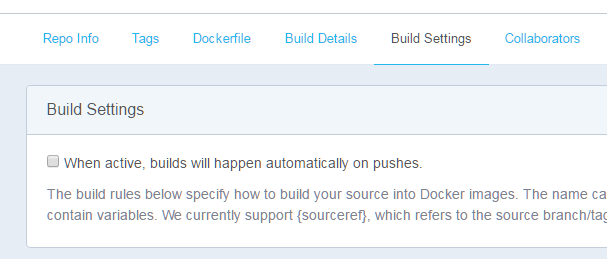
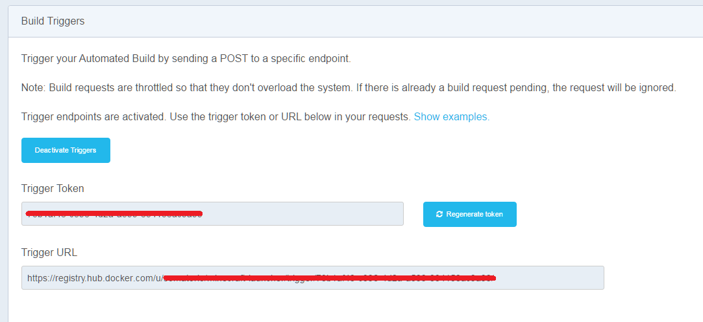

Você faz linting do seu Dockerfile? Deveria...
Então você escreveu seu Dockerfile seguindo as Melhores práticas e tudo mais, agora não precisa fazer mais nada, certo? Que tal fazer linting do seu Dockerfile?
E como posso fazer isso?
Isso vai depender de como é o teu processo de build de imagens, se é manual ou automatizado
O meu é manual, como faço?
Nesse caso é só instalar na máquina o linter (ou usar uma imagem Docker) e executá-lo com o Dockerfile como alvo.
Exemplo:
Dentro do diretório do dockerfilelint:
./bin/dockerfilelint </caminho/para/o/Dockerfile>
ou
docker run --rm -v /diretorio/do/dockerfile:/workdir -w /workdir replicated/dockerfilelint Dockerfile
Obs: Note que o caminho do volume é o caminho para o diretório onde o Dockerfile vai estar, não diretamente para o arquivo
Há também a opção de utilizar o site FROM:latest
O meu é automatizado, como faço?
Depende de como é feita essa automatização (não que mude muito), se ela é feita através da opção automated build do docker hub ou se é feita em uma ferramenta de CI/CD (opcionalmente com push para o registry na pipeline)
Eu uso o automated build! É mais prático
Na automated build são necessárias algumas ações...
- Desabilitar a opção Build Settings > Build Settings > When active, builds will happen automatically on pushes.
- Ativar as Triggers em Build Settings > Build Triggers > Activate Triggers, será gerado um token e uma URL de post para ativar a trigger
- Configurar um ambiente de CI/CD para executar o linter e enviar o push para a URL da trigger (usando o comando como se fosse manual no estágio de teste)
Assim o docker hub não irá executar o build automaticamente após cada push e a ferramenta de CI/CD irá enviar a requisição de build após verificar que está tudo ok.
Exemplo (com circle-ci):
- 
- 
- Exemplo de circle.yml
machine:
services:
- docker
test:
override:
- docker run --rm -v $(pwd):/workdir -w /workdir replicated/dockerfilelint Dockerfile
deployment:
dockerhub:
branch: master
commands:
- curl -X POST <URL da Trigger>
Exemplo 2 (com travis-ci):
- Exemplo de .travis.yml
sudo: required
services:
- docker
script:
- docker run --rm -v $(pwd):/workdir -w /workdir replicated/dockerfilelint Dockerfile
after_success:
- if [ "$TRAVIS_BRANCH" == "master" ]; then
curl -X POST <URL da Trigger>
fi
Eu uso uma ferramenta de CI/CD! Porque prefiro ter mais controle sobre o build/Porque meu repositório de imagem originalmente era manual[artigo pendente]/Porque eu uso um registry privado/Seu motivo aqui
Basta incluir um estágio de teste antes do build (se já não tem um) na pipeline da imagem e usar a ferramenta como se fosse manual.
Como aparece o resultado do teste?
A saída será algo parecido com isso, caso não encontre erros:
File: Dockerfile
Issues: None found 👍
Caso encontre algo, o relatório será parecido com isso:
File: Dockerfile
Issues: 3
Line 5: forceerror
Issue Category Title Description
1 Possible Bug Missing Required All commands in a Dockerfile require at least 1 argument.
Arguments A line in a Dockerfile can be in any of the following formats:
* * *
#### `# Comment`
Docker will treat any line that begins with a `#` as a comment.
* * *
#### `INSTRUCTION arguments`
All instructions require at least 1 argument, and should be on the
same line as the `INSTRUCTION`.
* * *
#### `RUN` continuation
If a `RUN` line ends with a `\`, the next line will be treated as
part of the same `RUN` arguement.
* * *
#### Blank or Whitespace
Blank lines are allowed and will be ignored.
* * *
2 Clarity Capitalize For clarity and readability, all instructions in a Dockerfile
Dockerfile should be uppercase.
Instructions This is a convention adopted by most of the official images and
greatly improves readability in long Dockerfiles. For an example
of
why this makes a difference, check out the current [redis
Dockerfile](https://github.com/docker-library/redis/blob/b375650fb6
9b7db819e90c0033433c705b28656e/3.0/Dockerfile)
and you should be able to easily see the instructions used.
3 Possible Bug Invalid Line This line is not a valid Dockerfile line.
Como se pode notar, a descrição dos erros é feita em Markdown.